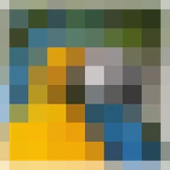

মোজাইক

লেয়ারকে বর্গাকারে ভাগ করে প্রতিটিকে তার গড় কালার দিয়ে ভরে দেয়।
সেটিংস
| সেটিং | ধরন | রেঞ্জ | ডিফল্ট |
|---|---|---|---|
| সংখ্যা | সংখ্যা | 1 থেকে 500 | 20 |
| স্ট্রেচ | পয়েন্ট (X, Y) | 0.01 থেকে 10 | 1, 1 |
| অফসেট | পয়েন্ট (X, Y) | -5000 px থেকে 5000 px | 0 px, 0 px |

লেয়ারকে বর্গাকারে ভাগ করে প্রতিটিকে তার গড় কালার দিয়ে ভরে দেয়।
| সেটিং | ধরন | রেঞ্জ | ডিফল্ট |
|---|---|---|---|
| সংখ্যা | সংখ্যা | 1 থেকে 500 | 20 |
| স্ট্রেচ | পয়েন্ট (X, Y) | 0.01 থেকে 10 | 1, 1 |
| অফসেট | পয়েন্ট (X, Y) | -5000 px থেকে 5000 px | 0 px, 0 px |